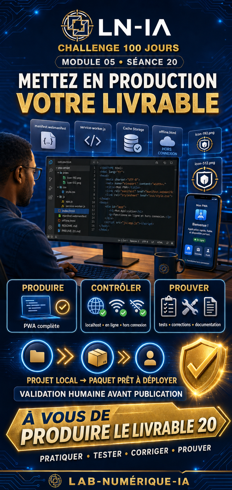

Saisir mon projet
Renseignez public, besoin, source, contenu, style et fonctions. Le prompt se met à jour pendant la saisie.
Ouvrir le formulaireATELIER LN-IA · SÉANCE 18
Après les fondations du Web en S17, préparez le contenu et le prompt maître qui guideront la production de votre mini-site dans VS Code.
HTML organise. CSS présente. JavaScript fait réagir.
Une saisie manuelle ou quatre exemples modifiables pour préparer votre mini-site.
Explorer les démonstrationsRetrouvez le support S17, le carnet, les productions et le portfolio. La copie intégrée est un instantané ; les exports ne remplacent pas les fichiers du disque.
Renseignez public, besoin, source, contenu, style et fonctions. Le prompt se met à jour pendant la saisie.
Ouvrir le formulaireFormation, association, artisanat ou portfolio : chargez un exemple, reformulez les champs et exportez votre prompt.
Choisir une démonstrationLe navigateur prépare le prompt. Vous le lancez dans VS Code avec Codex, GPT ou Claude Code pour obtenir les fichiers et le ZIP. S19 reprend l’assemblage et les essais.
HTML, CSS, JavaScript et navigateur
Contenu et prompt maître du mini-site
La page V1 et sa cible
La V2 et son essai lecteur
PROJECTION COLLECTIVE
22 vues relient les fondations S17 au brief, au prompt maître et aux essais de livraison. Chaque vue possède une note pour le formateur.
Flèches pour avancer, Échap pour revenir à l’atelier.
Supports originaux issus du raccourci AFFICHES. Les dates d’été imprimées ne remplacent pas le calendrier d’automne 2026.

Vue d’ensemble du parcours, en appui à la vue 4.

Repère d’ouverture pour observer HTML, CSS et JavaScript.

Support de cadrage pour préparer la suite après les essais S17.

Transition vers la suite. La date d’été imprimée appartient au support original.

Perspective pour la suite du module, au-delà des objectifs de S17.

Premier repère pour les essais et les preuves du livrable final.
Variante de l’affiche S20, conservée pour comparaison et discussion.

Horizon du parcours. Les résultats et la validation restent à établir.
Perspective de production avancée, au-delà du programme de S17.
COMPRENDRE, CADRER ET PRODUIRE
Les rôles des fichiers observés en S17 deviennent les exigences d’un mini-site à produire et à vérifier.
Ouvrir le support S17 et expliquer HTML, CSS, JavaScript et le navigateur.
Définir le public, la source, les six sections et l’action unique.
Saisir son projet ou charger un des quatre exemples.
Adapter pages, style, interactions et ressources puis relire le prompt actualisé.
Exporter le prompt et le lancer dans VS Code avec l’agent choisi.
Extraire le ZIP, tester les fichiers et conserver les observations réellement faites.
| Minutes | Phase | Geste du candidat | Observation du tiers |
|---|---|---|---|
| 0–8 | Reprendre | Ouvrir le support S17 et le dossier Challenge. | Le candidat distingue HTML, CSS et JavaScript. |
| 8–20 | Cadrer | Définir le lecteur, les six sections et la destination. | La promesse correspond à une source identifiée. |
| 20–35 | Comparer | Explorer quatre exemples et choisir un point de départ. | Les limites de chaque exemple sont expliquées. |
| 35–65 | Préparer | Saisir ou charger les champs puis personnaliser le prompt. | Le prompt reflète les modifications du formulaire. |
| 65–80 | Produire et éprouver | Exporter le prompt, lancer un agent dans VS Code puis essayer la livraison si disponible. | Le ZIP est extrait et les essais réellement effectués sont notés. |
| 80–90 | Conserver | Exporter contenu, prompt, preuve et relais. | Les pièces présentes et manquantes sont distinguées. |
Les 90 minutes comprennent le cadrage, les démonstrations et la préparation du prompt. Si la génération ou les essais se poursuivent après la séance, les noter comme restant à faire. S19 reprend les sources et la V1 réellement disponibles.
QUATRE CAS FICTIFS
Explorez le contenu et ses limites, puis chargez le brief dans l’atelier pour l’adapter et générer votre prompt maître.
Une seule valeur change à la fois. Ce prototype prépare le travail d’assemblage de S19.
Un contenu, une présentation et une interaction.
HTML structure, CSS présente et JavaScript modifie un état.
HTML organise le contenu. CSS le présente. JavaScript change l’état du détail.
VOTRE DOSSIER PERSONNEL
Saisissez votre projet ou chargez une des quatre démonstrations. Reformulez les champs : le prompt est actualisé et prêt à exporter pour VS Code.
Tous les champs restent modifiables. Charger un exemple remplace le brief et efface la revue personnelle après confirmation ; sauvegardez votre carnet pour le conserver.
Ce texte reprend les champs du formulaire. Pour le modifier, reformulez les champs puis relisez le résultat. Copiez-le ou exportez-le vers 02-PROMPTS/prompt-maitre-mini-site-S18.md.
Retrouvez le support S17, le carnet, les productions et le portfolio. La copie intégrée est un instantané ; les exports ne remplacent pas les fichiers du disque.
PRODUIRE APRÈS L’ATELIER
Chaque prompt précise son entrée, sa limite, sa sortie et son contrôle. Vous gardez votre décision dans le dossier personnel.
MISSION COURTE
À partir de mon support S17, aide-moi à distinguer HTML, CSS, JavaScript et le navigateur. Demande un exemple observé et ne remplis pas mes observations.
MISSION COURTE
À partir de mon public, de son besoin et de ma source, aide-moi à préciser les six sections, une action unique, sa destination, les pages et les limites du mini-site.
MISSION COURTE
Propose deux accroches fondées sur ma source. Explique leurs différences et laisse-moi choisir. N’ajoute aucun service ou résultat absent.
MISSION COURTE
Utilise le générateur de la rubrique Atelier : renseigne les champs, examine le prompt actualisé et exporte-le pour VS Code avec Codex, GPT ou Claude Code.
MISSION COURTE
Examine les sources du mini-site et son archive. Contrôle l’arborescence, les chemins relatifs, la destination, l’usage hors ligne, le clavier et la largeur mobile. Sépare les essais effectués de ceux qui restent à faire.
MISSION COURTE
À partir des pièces réellement obtenues, indique le prompt, l’agent, les sources, l’archive, les observations et les corrections encore attendues. Ne déclare aucune validation sans revue humaine.
RÉVISION ACTIVE
Répondez avant de retourner la carte. Donnez ensuite un exemple issu de votre propre dossier.
HUIT SITUATIONS
Choisissez une réponse par situation. Après correction, les trois choix reçoivent une explication.
REVUE DES PIÈCES
Ouvrez les fichiers pendant la revue. Le pilote consigne son observation, son nom et sa décision datée.
TRACES DE PRODUCTION
Conservez les fichiers dans votre dossier Challenge. Conservez le prompt exporté, les sources et le ZIP réellement produits avec le contenu et sa preuve.
prompt-maitre-mini-site-S18.md · exporté depuis Atelier
structure-page-projet.md · plan de départ
contenu-page-projet.md · rédigé en S18
preuve-S18.md
index-portfolio.md
relais-S19.md
Ajoutez l’entrée à l’index existant. Conservez les versions et les preuves des autres séances.
HTML, CSS, JavaScript et navigateur
Contenu et prompt maître du mini-site
La page V1 et sa cible
La V2 et son essai lecteur
VENDREDI 27 NOVEMBRE · S19
Rouvrez le contenu, le prompt maître, les sources et le ZIP disponibles. Joignez la fiche cible. Le lecteur devra ouvrir la bonne pièce depuis une copie du dossier.
04-WEB/page-simple-v1.md ou .htmlSUPPORTS ET RÉFÉRENCES
Les fichiers du pack s’ouvrent depuis le mini-site et restent disponibles après extraction.
Modèles, cas, fiche et prototype guidé.
Rédaction, comparaison et observation du binôme.
Six sections à rédiger dans votre dossier.
Avant, après, motif, essai et revue.
Entrée S18 à ajouter à votre index.
Préparer plan, contenu et fiche cible.
Exemple fictif, observations laissées à compléter.
Reprise, prompt maître et quatre missions.
Quatre écarts et leurs corrections.
Fidélité, HTML/CSS/JS, Bootstrap, Vite et SEO.
12 cartes et 24 explications.
Trois fichiers HTML/CSS/JS à explorer après la rédaction.
Cadre d’automne S17 à S20.
Ce qui est repris et ce qui relève de S19.
Retrouver la source corrigée du module 04.
Archive d’été citée dans vos supports. Son statut concerne cette ancienne version.
Documentation officielle d’intégration.
Construction et diffusion du dossier dist.
Contenu utile, titres et liens descriptifs.
Aucun support ne correspond à cette recherche.
Retrouvez le support S17, le carnet, les productions et le portfolio. La copie intégrée est un instantané ; les exports ne remplacent pas les fichiers du disque.
Vue d’ensemble du parcours, en appui à la vue 4.
Repère d’ouverture pour observer HTML, CSS et JavaScript.
Support de cadrage pour préparer la suite après les essais S17.
Transition vers la suite. La date d’été imprimée appartient au support original.
Perspective pour la suite du module, au-delà des objectifs de S17.
Premier repère pour les essais et les preuves du livrable final.
Variante de l’affiche S20, conservée pour comparaison et discussion.
Horizon du parcours. Les résultats et la validation restent à établir.
Perspective de production avancée, au-delà du programme de S17.